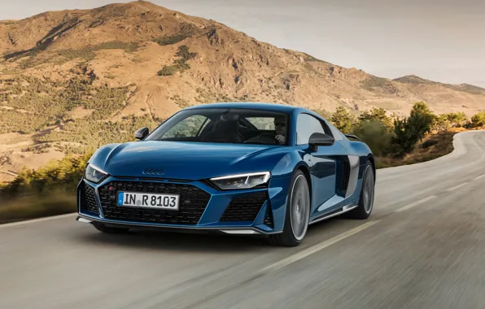
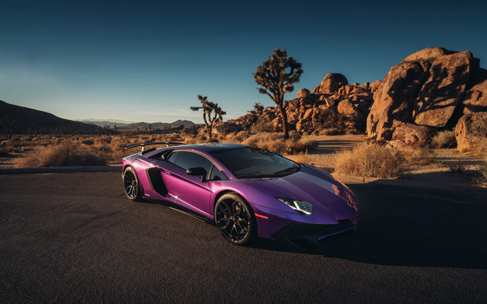
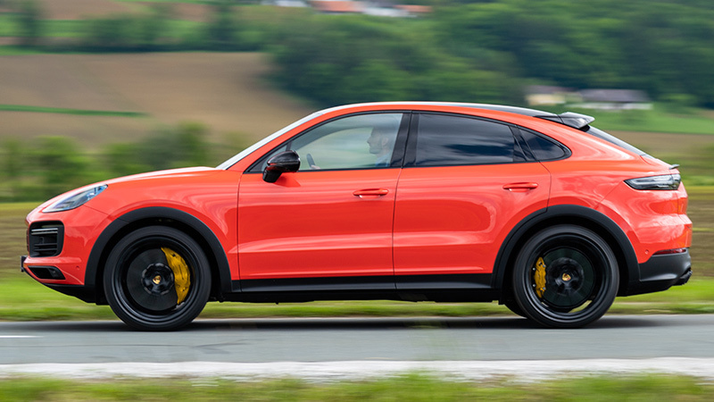
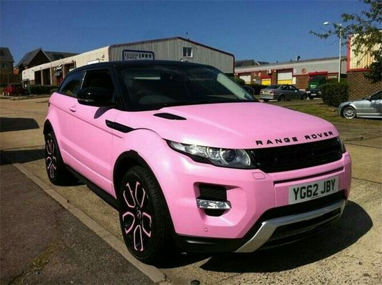
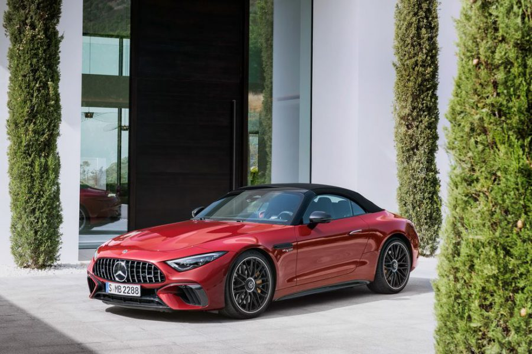
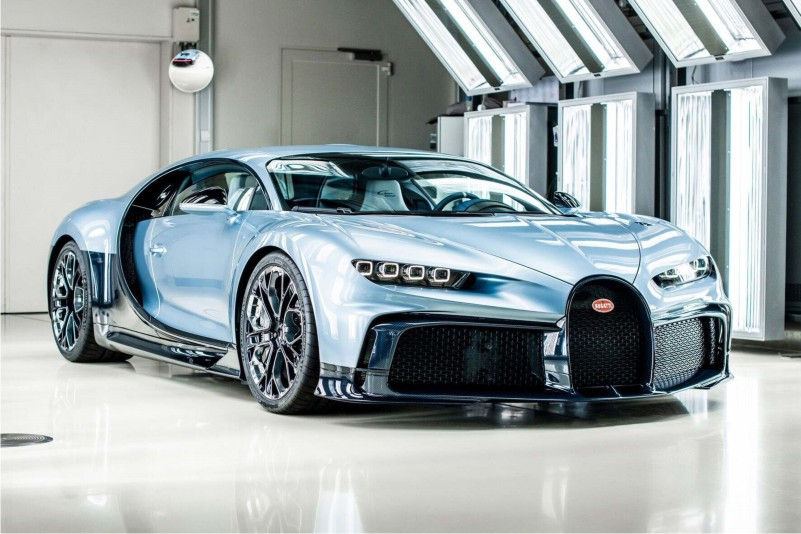

Luxury Cars
Existem muitos carros que chamam nossa atenção só de existirem, bonitos, luxuosos, velozes, confortáveis e muito mais, pensando nisso, decidi trazer um top 7, com os mais queridinhos, então se você também é um fã de carros, desce a tela!
Audi R8

- Lançamento: Introduzido em 2006, o R8 rapidamente se tornou um ícone da Audi.
- Design: Possui um visual agressivo, com carroceria em alumínio e fibra de carbono.
- Performance: Oferece motores V8 e V10, com versões que alcançam até 620 cv. Acelera de 0 a 100 km/h em cerca de 3 segundos.
- Tecnologia: Interior luxuoso, sistema MMI e Audi Virtual Cockpit em algumas versões.
- Versões: Inclui o R8 V10 Performance (versão mais potente) e o R8 Spyder (versão conversível).
- Reconhecimento: Elogiado por desempenho, conforto e presença em filmes.
O Audi R8 é um supercarro lançado em 2006, conhecido por seu design agressivo e performance impressionante. Ele vem com motores V8 e V10, podendo atingir até 620 cv e acelerar de 0 a 100 km/h em cerca de 3 segundos. O interior é luxuoso e tecnológico, com sistema MMI e Audi Virtual Cockpit. As principais versões são o R8 V10 Performance e o R8 Spyder (conversível). É um modelo que combina potência, conforto e estilo.
Ferrari 458 Itália

- Motor: V8 de 4.5 litros, com cerca de 570 cv.
- Aceleração: 0 a 100 km/h em aproximadamente 3,4 segundos; velocidade máxima de 325 km/h.
- Transmissão: Automática de dupla embreagem (F1).
- Interior: Focado no motorista, com acabamentos luxuosos e tecnologia avançada.
- Versão: 458 Spider, uma versão conversível lançada em 2011.
A Ferrari 458 Itália, lançada em 2009, é um supercarro com motor V8 de 4.5 litros que produz cerca de 570 cv. Acelera de 0 a 100 km/h em aproximadamente 3,4 segundos, com uma velocidade máxima de 325 km/h. Seu design aerodinâmico é assinado pela Pininfarina, e possui um interior luxuoso focado no motorista. A versão conversível, chamada 458 Spider, foi lançada em 2011. É amplamente reconhecida por seu desempenho excepcional e estilo marcante.
Lamborghini Aventador

- Motor: V12 de 6.5 litros, com até 770 cv na versão SVJ.
- Aceleração: 0 a 100 km/h em cerca de 2,9 segundos; velocidade máxima acima de 350 km/h.
- Transmissão: Automática de dupla embreagem (LDF).
- Versões: Inclui Aventador S, SVJ e Ultimae, cada uma com melhorias em desempenho e tecnologia.
- Interior: Luxuoso e esportivo, com tecnologia moderna.
A Lamborghini Aventador é um supercarro lançado em 2011, conhecido por seu design agressivo e motor V12 de 6.5 litros, que produz até 770 cv na versão SVJ. Acelera de 0 a 100 km/h em cerca de 2,9 segundos e alcança velocidades acima de 350 km/h. Com uma transmissão automática de dupla embreagem, a Aventador oferece desempenho excepcional e tecnologia avançada no interior. É um dos modelos mais icônicos da Lamborghini, com várias versões como a Aventador S e SVJ, cada uma trazendo melhorias em desempenho e aerodinâmica.
Porsche Cayenne

- Design: Linhas elegantes e interior luxuoso com materiais de alta qualidade.
- Motorização: Oferece opções de motores V6 e V8, com potências variando de 335 cv a mais de 600 cv na versão Turbo.
- Performance: Acelera de 0 a 100 km/h em cerca de 3,9 segundos (versão Turbo).
- Tecnologia: Sistema de suspensão ativa e infotainment avançado com conectividade.
- Versões: Inclui modelos como Cayenne E-Hybrid e Cayenne Coupé.
O Porsche Cayenne é um SUV de luxo lançado em 2002, que combina desempenho esportivo com conforto e versatilidade. Ele possui um design elegante, um interior refinado e oferece várias opções de motorização, desde V6 até potentes V8, com versões que vão de 335 cv a mais de 600 cv na versão Turbo. O Cayenne pode acelerar de 0 a 100 km/h em cerca de 3,9 segundos. Equipado com tecnologia avançada, como suspensão ativa e sistema de infotainment moderno, ele se destaca como um dos SUVs mais vendidos no segmento premium. Se precisar de mais informações, é só me avisar!
Range Rover Evoque

- Motorização: Oferece opções de motores a gasolina e diesel, com potências variadas e transmissão automática de 9 velocidades.
- Tração: Disponível com tração dianteira ou integral (AWD).
- Tecnologia: Sistema Touch Pro com conectividade avançada, navegação e recursos de assistência ao motorista.
- Segurança: Equipado com múltiplos airbags, controle eletrônico de estabilidade e assistências diversas.
O Range Rover Evoque é um SUV compacto de luxo lançado em 2011, conhecido por seu design moderno e interior sofisticado. Ele oferece motorização a gasolina e diesel com transmissão automática, opções de tração dianteira ou integral (AWD) e tecnologia avançada com o sistema Touch Pro. Além disso, possui recursos de segurança robustos. O Evoque é uma escolha popular no segmento de SUVs de luxo, unindo conforto e desempenho.
Mercedes SL

- Design: Linhas aerodinâmicas e interior luxuoso com materiais de alta qualidade.
- Performance: Disponível com motores V6 e V8, oferecendo potência e eficiência, geralmente com transmissão automática.
- Tecnologia: Sistema MBUX para conectividade e infotainment, além de recursos avançados de assistência ao motorista.
- Segurança: Equipamentos de segurança abrangentes, incluindo múltiplos airbags e controle eletrônico de estabilidade.
A Mercedes-Benz SL é uma linha de carros esportivos conversíveis, lançada em 1952. Destaca-se pelo design elegante, desempenho potente e interior luxuoso. Com opções de motores V6 e V8, a SL oferece uma condução esportiva e confortável, além de tecnologia avançada com o sistema MBUX e recursos de segurança abrangentes. É considerada um ícone no segmento de esportivos conversíveis, unindo tradição e inovação ao longo das gerações.
Bugatti Chiron

Objetivo: Desenvolvido para ser um dos carros mais rápidos e luxuosos do mundo, combinando desempenho extremo com conforto.
Design:
Exterior: O Chiron apresenta uma estética aerodinâmica e agressiva, com linhas fluidas e uma grade frontal icônica. Os faróis em LED e as curvas marcantes contribuem para seu visual impressionante.
- Interior: O interior é ultra-luxuoso, com materiais de alta qualidade, como couro e fibra de carbono. Possui um painel de instrumentos digital e tecnologia de infotainment .
Velocidade máxima: A velocidade máxima é limitada eletronicamente a cerca de 420 km/h, embora o carro tenha potencial para ultrapassar essa.
Sistema Dinâmico: O Chiron possui um sistema de tração nas quatro rodas e uma transmissão automática de sete velocidades que garante uma condução suave e responsiva.
Inovação: Inclui tecnologias avançadas para controle de estabilidade, suspensão adaptativa e freios de alto desempenho.
O Bugatti Chiron é um supercarro de alto desempenho lançado em 2016, sucessor do Veyron. Com um design aerodinâmico e luxuoso, possui um motor W16 de 8.0 litros que gera 1.500 cv, permitindo aceleração de 0 a 100 km/h em cerca de 2,4 segundos e uma velocidade máxima limitada a 420 km/h.
O interior é sofisticado, com materiais de alta qualidade e tecnologia avançada. Produzido em apenas 500 unidades, o Chiron é altamente exclusivo e personalizável, com um preço inicial em torno de 3 milhões de euros. É considerado o auge da engenharia automotiva moderna e solidifica a posição da Bugatti no segmento de supercarros.